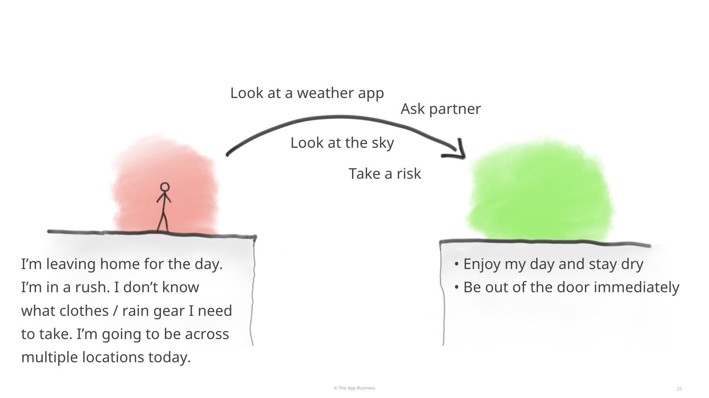
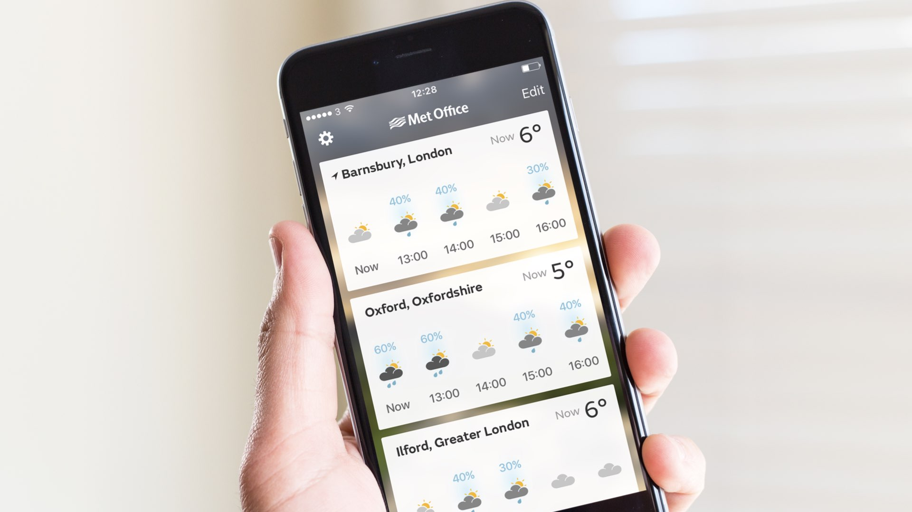
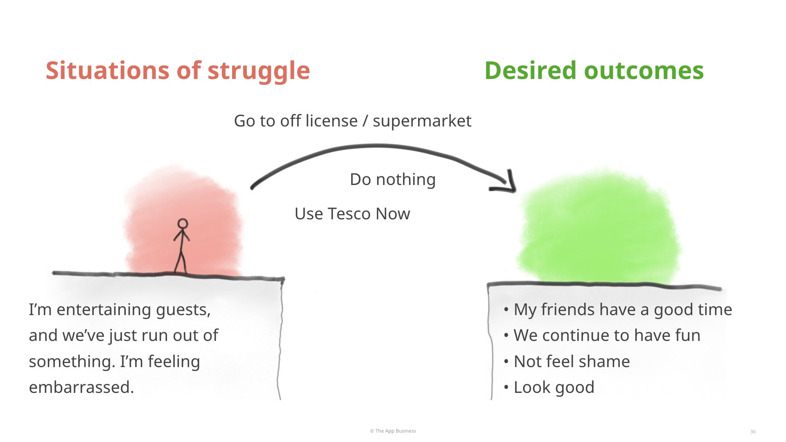
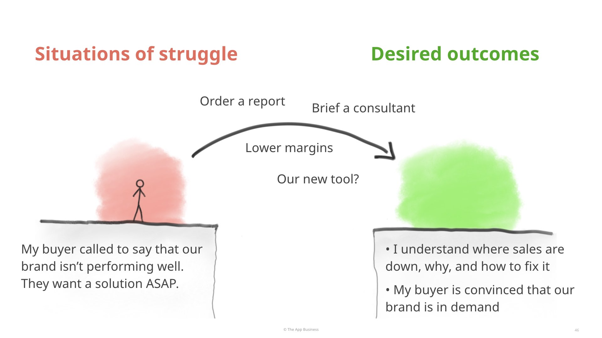
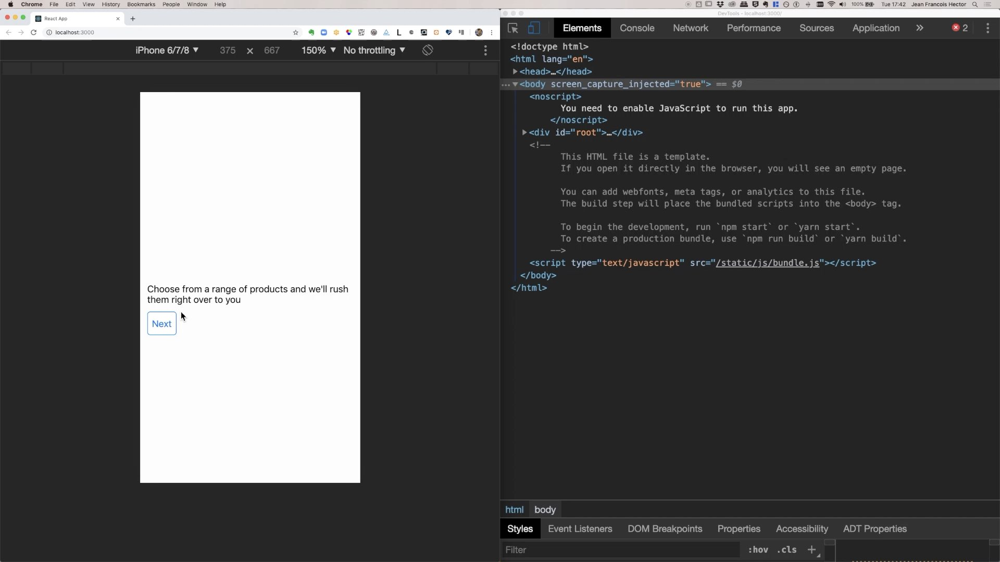

In Part 1: Jobs-to-be-Done in plain language, I've explained the two key ideas of Jobs-to-be-Done:

Now what I'd like to do is to show you how to use Jobs-to-be-Done in your day-to-day just by adopting three simple habits.
Have you ever been in a situation where everyone around you is starting from feature ideas, without first having clearly articulated (or agreed on) the problems that need solving?
Maybe a client comes to you and they already have a set of features they want to build, and maybe it doesn't entirely make sense to you.
Or you're briefed to design something, and you're told what features there needs to be, but you don't really know what needs are behind it.
When others around you are starting from feature ideas, you can ask a question: "What situations of struggle and desired outcomes are we designing for?"
Here's example of how that simple question can really change your design process.
When we (TAB) started working with the Met Office a few years ago, initially our goal was to create the best weather app out there: better than Apple's weather app, better than the BBC's weather app, better than Accuweather, better than all of them.
So quite naturally, we looked at all the features that all these other weather apps had. It was tricky because there were quite a lot of advanced features and we had a tight budget and timeline. Which of these features are going to help us make a better weather app?
Looking at all these feature ideas did not give us any sense of direction. We didn't know where to start. We didn't have a vision. It was really hard to organise the design process, it was really hard to prioritise anything.
So instead, we reframed the brief. What people are ultimately looking for is not all the weather app features. So what is it that people actually want?
Doing qualitative research across the UK, we realised that a lot of potential users were experiencing a situation of struggle that looked like this:
I'm leaving home for the day, I'm in a rush. I need to be out of the door immediately. I don't know what clothes or rain kit to take with me today. And also – this is a very important point – I'm going to be across locations during the day.
We realised that a big proportion of our potential users live and commute across different weather locale in the same day.
In this situation of struggle what people were hoping to achieve was quite simple: they wanted to enjoy their day and stay dry; but very importantly they wanted to be out of the door immediately because they were already late.
What's really interesting is to look at what behaviours, what strategies people use. And these behaviours and strategies will tell you what actually matters to them.
Most of the time, most people would not look at a weather app because it took too much time. Instead they might just look at the sky, and try to assess. Or they might ask their partner what the weather is going to be like. Or very often they would just take a chance and go out. Because looking at a weather app would take too much time.
We thought it'd be quite easy to design something that makes it incredibly quick and easy for someone, when they need to get out of the door immediately, when they're going to be across several weather locations during the day, to know just what they need to know to.
It turns out, when we looked at Apple's weather app at the time, it didn't do that at all! It would give you the weather for three different weather locations at the same time. And if you want to have a bit more detail about how it's going to be today in London, you have to tap on London, see what the whether is going to be like, remember, go out of London, go back to Oxford, see how it is, and do all this math in your head. It's just too much effort, as proven by the fact that people don't do it.
And we realised that none of big name weather apps made this quick and easy. BBC weather would give you lots of detail about one location. But then you have to find that, and find another location again and do all these things in your head.
Of all the key big weather apps that we were competing with, none of them was making it quick and easy enough for people to just know what they need to know about the weather across several locations.
And that became our opportunity. Our very first release of the Met Office app literally did just that, that none of the other weather apps were doing, and we were very successful with it.
So, when other people around you are starting from feature ideas, you can ask: "What situations of struggle and desired outcomes are we designing for?". Then that will show you a way through the design process.
And that is the first habit.
Have you ever been in a situation where you felt some pressure to design something that's new and innovative, before you really understand what the actual user needs’ are?
So when others around you are trying to be innovative, you can ask:
“How can we make it quicker and easier for people to go from their situation of struggle to their desired outcomes?”.
Tesco Now is an express groceries delivery service. You get groceries delivered to your door within 30 minutes. We helped Tesco to design the app and parts of the service two years ago.
Tesco actually had a pilot running through a third party even before we got involved. So we could already talk to people who had used a previous iteration of the service. This helped us understand their situations of struggle and desired outcomes.
When Tesco Now started, the delivery fees were quite high. Maybe £6 or £8.
It really puzzled me that people would quite regularly pay £6 or £8 just to get groceries delivered to them very quickly. I did not understand why it would make sense to them.
But when we did do some research, we realised that people who were using Tesco Now were doing so in a range of situations of struggle.
For example, here's one of the situations of struggle that we heard about:
I'm entertaining guests and we've just run out of something. And I’m feeling quite embarrassed. It could have been alcohol and in another example it was someone doing a barbecue on a Sunday and they had forgotten to buy food for the kids…
They were hoping that their friends would continue and have a good time. They didn't want to feel embarrassed. And sometimes they wanted to look good or do something fun.
There where a few different ways that they could get from that situation struggle to their desired outcomes.
They could for example go to a local off-licence or supermarket, if there is one. They could do nothing, which they often did, because out was too much effort. Or recently they had been using Tesco Now.
Now, here's a key question:
what makes someone decide to use one solution over the other? What parts of a good user expense would actually matter? What parts won't matter?
Here's a tool, called the "Four Forces Diagram", which helps you understand and articulate that.
For a specific situation (like the one above), the diagram suggests that there are four forces that decide whether someone will be sticking with the way they've always done things (e.g. going to the off-licence or supermarket) or whether they'll switch to a new strategy, product or service (e.g. Using Tesco Now).
It says that there are two forces that make you want to abandon your usual way of doing things and try something new, and two forces that actually keep you with the usual way of doing things.
Understanding these things really helped us design and prioritise, make the right trade-offs when we designed the app the service.
I'll show you a bit more about Tesco Now in a moment.
So when other people are trying to be innovative, you can really help everyone just by asking:
How can I make it easier for people to go from their situation of struggle to that their desired outcomes?”
Have you ever been in a situation where you feel like ideas are being judged based on what they look like?
For example, if you see that designs are being reviewed on big TV screens or on PDFs over emails, or if there's some pressure for the designs to look beatiful before they can be reviewed – while there might still be lots of holes in the user experience.
In these sitations you can ask:
“How quickly and easily does our idea here take people from their situational of struggle to their desired outcomes?”.
An idea is just a mechanism to get people from a situation struggle to their desired outcome.
So we can measure how effective an idea is, using more objective measures like time on task for example – rather than just colleagues' or stakeholders' opinions or gut reactions to a design.
Dunnhumby provides sales performance analytics to companies that make the products that we buy in supermarkets. For example to Warburtons, Coca-cola and Nestle and all the other big brands.
Concretely at Nestlé there will be a person who’s called the "Account Manager for Nescafe". They are responsible for the sales of Nescafe at a supermarket (like Tesco).
Here’s a situation struggle that we've heard a lot from these account managers:
My client at Tesco just called and said that our brand (Nescafe) is not selling well. And they me to give them a solution ASAP.
That's a really stressful situation. The Account Manager wants to understand very quickly where sales are down (is it in all regions, or just in some regions? Is it last week, or is it a past six months?). They want to diagnose the problem quickly and give an convincing answer and immediate solution to their client. So that their client stays convinced that Nescafé is still healthy and in demand, and that there's no need to delist Nescafé products or cut Nescafé's margins.
What sort of things does an account manager do when they are in that situation or struggle? There are few different solutions:
Initially I found designing a new solution for this very challenging, because different Account Managers telling us different things about what mattered to them. It was actually really hard for us do know what trade-offs we should actually make.
We were tesitng prototypes to try to understand what worked, what didn't work, and what mattered to users most. But these simple Flinto, Marvel or Axure prototypes. They were somewhat interactive, but not functional enough to allow test participants to complete a realistic task without our help.
So we heard lots of opinions, but these were just a list of things that different people liked or wanted. There was no way for us to understand what real trade-offs Account Managers would make among their preferences, or what solution will satisfy the most people.
We wanted to do more rigorous, task based user testing but we couldn't because we didn't have the right sort of prototypes.
Also, it was the beginner project so we couldn't get time from engineers. And clients client didn't really want to use engineering time for design.
So, one day build a functional-enough prototype of that interface using HTML, CSS, JavaScript and React.
I wanted us to be able to make decisions based on how quickly and easy it would be for someone in that situation of struggle, to get to their desired outcomes.
I wanted to know how long it'd take them using different concepts, their success rates, and see what their experience were like – rather than just what they said when looking at mock-ups.
Doing this was surprisingly quick, thanks to Jobs-to-be-Done.
If I had just briefed an engineer, they would probably have built too much.
I built only what was needed to test a very precise set of hypotheses, and to allow test participants to complete a very specific task.
I would I tell a participant to imagine that they were in the situation of struggle above, and to use the prototype to get to their desired outcomes. And I'd shut up, because I wouldn't need to give them any further instruction about how to use the prototype – it was functional enough to support this specific testing task.
Test participants could use that prototype to that task you can use it for 10 minutes without realising it's a prototype.
But if you explored the prototype just in a random direction, you wouldn't go very far at all. So this worked well for a specific user testing task, but it wouldn't have been suited for distributing to stakeholders to impress them, for example.
The prototype was very quick to build because:
Doing this completely changes the design process, because now twice a week we could get objective – or more rigorous more objective – data about whether ideas were working or not.
And that meant that we spend a lot less time discussing opinions among us.
So, when people were judging ideas by how they look or sound, ask
“How quickly and easily does out idea takes people from their situation of struggle to their
desired outcomes?”.
On Tesco Now, I used an even quicker method called "Breadboarding", which I got from Basecamp's Ryan Singer.
It’s very quick from a design perspective, and it’s even so much quicker to code. So much that it literally took me two hours.
It shows that functional prototyping can be extremely quick, if you're willing to focus on testing hypotheses, rather than how things look.
In Part 1: Jobs-to-be-Done in plain language, I've explained the two key ideas of Jobs-to-be-Done:
In this article, I showed you how to use Jobs-to-be-Done by adopting three habits: